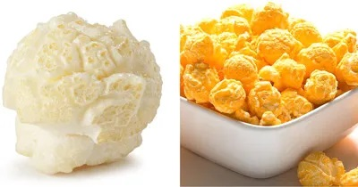
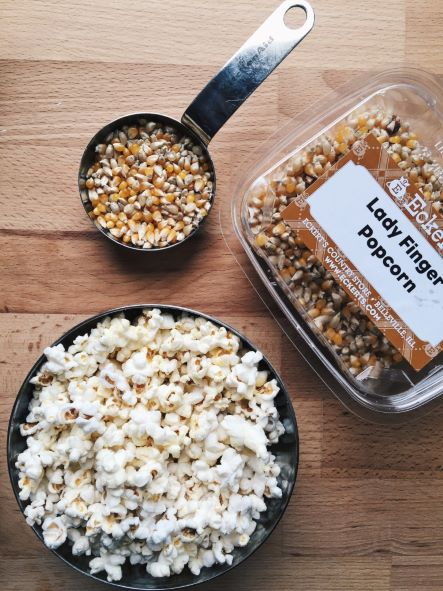

Butterfly popcorn

Also sometimes referred to as “snowflake popcorn”, butterfly is well known for its use in theater-style and home-popped popcorn products, usually offered-up with nothing more than a little salt and perhaps some melted butter. Its relatively delicate shape means butterfly popcorn is best consumed fresh-popped for maximum crunch and freshness.
Mushroom popcorn

is perfect for confection-coated applications such as Popcornopolis Caramel Corn. Its sturdy baseball shape (without those fragile butterfly wings) withstands the processes of candy-coating, and because of its exceptional surface area, accepts other flavors (like cheddar cheese!) very well too. The resulting products are less prone to crushing, and once coated, will tend to stay fresh and crispy much longer than their uncoated butterfly popcorn counterparts.
Ladyfinger popcorn

This yellow popcorn is dainty. If you love the tiny pieces of popcorn at the bottom of the bowl, you’ll love ladyfinger. The small size makes this type good for topping soups or baked goods.
Fun facts about popcorn

- Popcorn is over 5000 years old.
- The first commercial popcorn machine was invented by Charles Cretors in 1885.
- Nebraska produces the most popcorn in America, around 250 million pounds per year.
- Microwaveable popcorn was invented by Pillsbury in 1982.
- Popcorn is a healthy GMO-free and gluten-free snack.
- January 19th is National Popcorn Day.
- The hull of some varieties of popcorn shatters when it pops so it looks hull-less.
- Popcorn can reach up to 3 feet in distance when popping.
- In 1949, popcorn was temporarily banned from movie theaters for being too loud of a snack.
- During the World War II sugar shortage, Americans ate 3x more popcorn.
- America’s Favorite Gourmet Popcorn pops our popcorn at 400°F, which is the ideal temperature for popping popcorn.
- The unpropped popcorn kernels at the bottom of a popcorn bag are called old maids.
- Popcorn kernels are 4% water, and the water causes popcorn to pop when heated up.
- Popcorn has three common shapes: rice, South American, and pearl. Pearl is the most popular popcorn shape.
- In the 1800’s, popcorn was often eaten as a cereal with milk and sugar.
- Popcorn is a popular North American Christmas tree decoration. Popcorn is threaded onto a string and used as garland.
- When popcorn pops in a round shape it is called mushroom popcorn and popcorn which pops in unpredictable shapes is called butterfly popcorn.